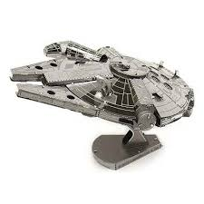
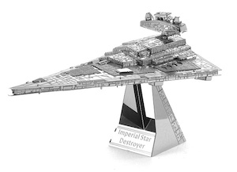
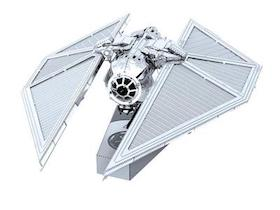

Want to make your own Star Wars fleet? Now you can with Ani's Metal Star Wars.
|  |  |  |
Want to make your own Star Wars fleet? Now you can with Ani's Metal Star Wars.
Here at Ani's Metal Star Wars, our in-house Metal Folder, Drew, creates creates one of a kind peices that will take your office, home, or lair to a galexy far far away. With the ability to capture the essence of every Star Wars ship, Drew can recreate what other artists only dream of. When John Oliver asked Drew what made him want to recreate the galexy far far away Drew said, "We all have an inner child that never wants to grow up and mine never did. We all need an excape from the day to day and I decided to offer that to others for my day to day."
One of the perks of having Drew with us it the vast knowledge that he bring to our creative team. He is able to tell the stories and bring the ships to life in a way that follows the Star Wars story to a point. This level of authenticity can't be found any where else.
See more of Drew's work for Ani's Metal Star Wars here.
Wanna see more of Drew's work every week? Sign up for a weekly email newsletter here: